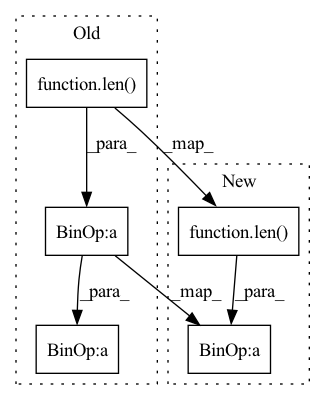

Pattern ID :1275

Before Change
[sparse_dict[key].values() + offset for key, offset in zip(keys, self.offsets)])
batch_offsets = sparse_features.offsets()
batch_size = len(sparse_features.lengths()) // len(keys) // self.world_size
flattened_sparse_embeddings = self.embed(flattened_sparse_features, batch_offsets)
return flattened_sparse_embeddings.view(batch_size, len(keys), -1)
After Change
[sparse_dict[key].values() + offset for key, offset in zip(keys, self.offsets)])
batch_offsets = sparse_features.offsets()
batch_size = len(sparse_features.lengths()) // len(keys)
feature_size = len(keys)
flattened_sparse_embeddings = self.embed(flattened_sparse_features,
batch_offsets,
send_shape=(batch_size, feature_size, -1))
In pattern: SUPERPATTERN
Frequency: 4
Non-data size: 5
Instances
Fragment ID: 3742220
Project Name: hpcaitech/freqcacheembedding
Commit Name: 6b7be0fc3709abc8e34c88cd2e135f3b195f86cc
Time: 2022-06-23
Author: zhangg1998@outlook.com
File Name: recsys/models/dlrm.py
M Class Name: FusedSparseModules
N Class Name: FusedSparseModules
M Method Name: forward(2)
N Method Name: forward(2)
M Parent Class: nn.Module
N Parent Class: nn.Module
M File Name: recsys/models/dlrm.py
N File Name: recsys/models/dlrm.py
M Start Line: 304
M End Line: 314
N Start Line: 143
N End Line: 156
'>
Before Change
mlmLoss = list()
for mlm, logit, mask, target in zip(self._mLoss, predicts, masks, targets):
mlmLoss.append(mlm(logit, target, mask))
return (ssimLoss, l1l2Loss, sum(mlmLoss) / len(self._mLoss) + 0.1 * reg), (restored, codes, None, logits, None)
class Whole(nn.Module):
After Change
mlmLoss = list()
for mlm, logit, mask, target in zip(self._mLoss, predicts, masks, targets):
mlmLoss.append(mlm(logit, target, mask))
return (ssimLoss, l1l2Loss, sum(mlmLoss) / len(self._mLoss)), (restored, codes, None, logits, None)
class Whole(nn.Module):
'>
Fragment ID: 3742229
Project Name: xiaosu-zhu/mcquic
Commit Name: 4314a8bc01e76c0425b6ca1c66787bc7a80f5e94
Time: 2021-05-23
Author: xiaosu.zhu@outlook.com
File Name: src/mcqc/models/whole.py
M Class Name: WholePQMLM
N Class Name: WholePQMLM
M Method Name: forward(3)
N Method Name: forward(3)
M Parent Class: nn.Module
N Parent Class: nn.Module
M File Name: src/mcqc/models/whole.py
N File Name: src/mcqc/models/whole.py
M Start Line: 51
M End Line: 51
N Start Line: 51
N End Line: 51
'>
Before Change
m, x_rnn, _ = self.erb_stage(feat_erb)
spec = self.mask(spec, m, atten_lim) // [B, 1, T, F, 2]
lsnr, _ = self.lsnr_net(x_rnn)
out_specs = [spec.squeeze(1)] * (len(self.refinement_stages) + 1)
// re/im into channel axis
spec_f = (
spec.squeeze(1)[:, :, : self.df_bins].permute(0, 3, 1, 2).clone()
After Change
m, x_rnn, _ = self.erb_stage(feat_erb)
spec = self.mask(spec, m, atten_lim) // [B, 1, T, F, 2]
lsnr, _ = self.lsnr_net(x_rnn)
out_specs = [spec.squeeze(1).clone() for _ in range(len(self.refinement_stages) + 1)]
// re/im into channel axis
spec_f = (
spec.squeeze(1)[:, :, : self.df_bins].permute(0, 3, 1, 2).clone()
'>
Fragment ID: 3742228
Project Name: rikorose/deepfilternet
Commit Name: c0c6d7aa775c95d92e8a38118e390a30db7cb1e1
Time: 2022-04-12
Author: h.schroeter@pm.me
File Name: DeepFilterNet/df/multistagenet.py
M Class Name: MSNet
N Class Name: MSNet
M Method Name: forward(3)
N Method Name: forward(3)
M Parent Class: nn.Module
N Parent Class: nn.Module
M File Name: DeepFilterNet/df/multistagenet.py
N File Name: DeepFilterNet/df/multistagenet.py
M Start Line: 536
M End Line: 536
N Start Line: 536
N End Line: 536